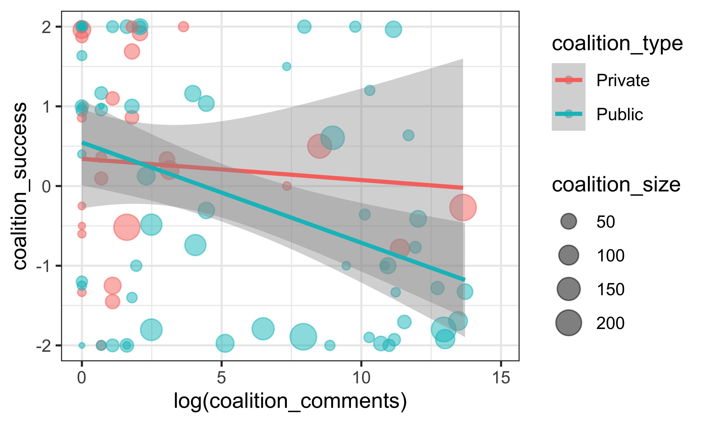
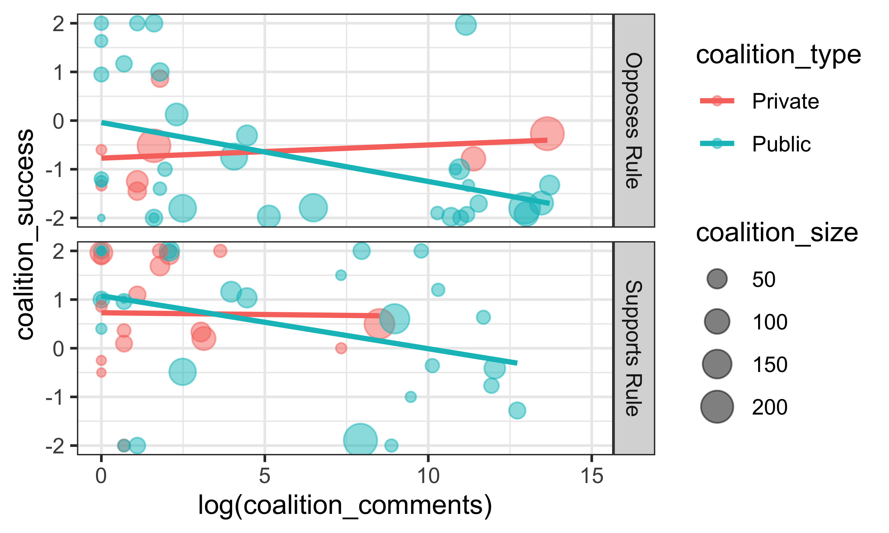
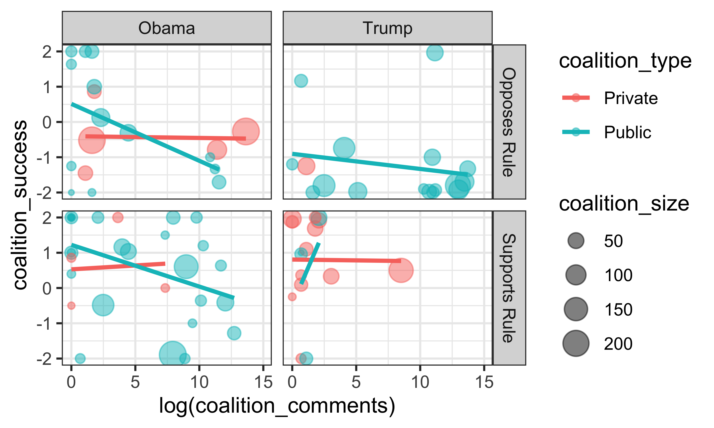
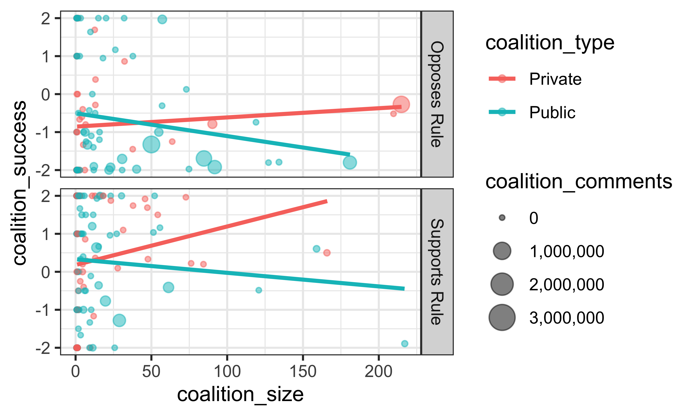
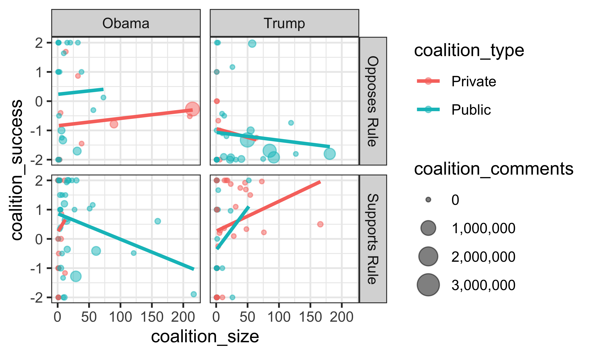
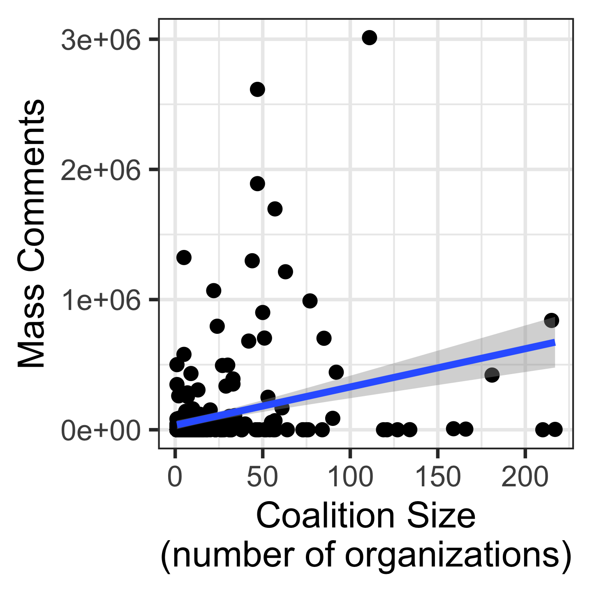
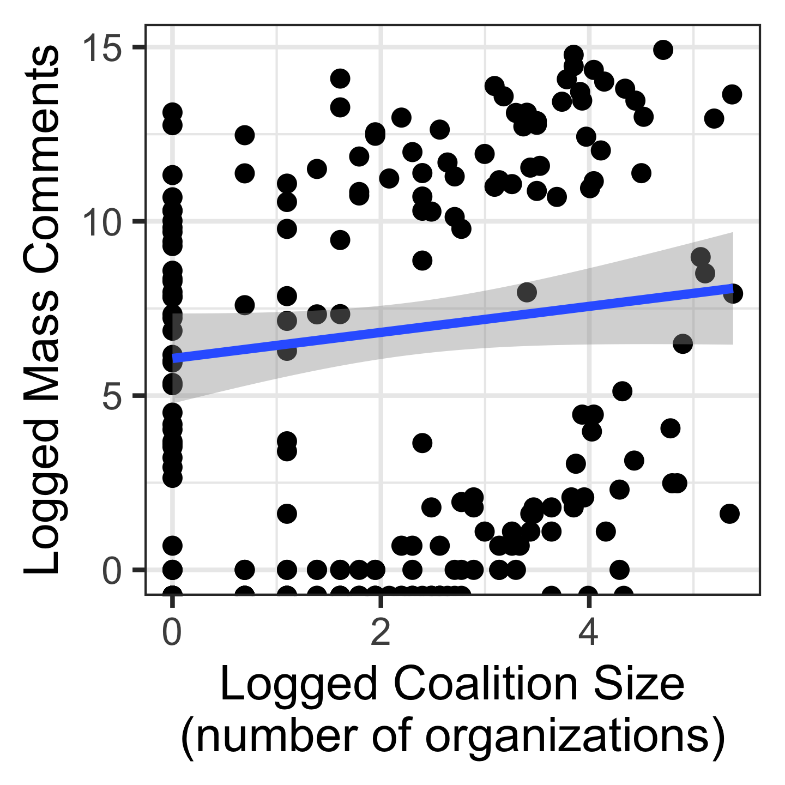

E Additional Descriptives
E.1 Organization-level summary counts:
| org_type | n |
|---|---|
| Ngo | 1,806 |
| Gov | 731 |
| Corp Group | 619 |
| Corp | 448 |
| NA | 108 |
| Org | 8 |
| Elected | 4 |
| Corp Groups | 2 |
| Gov Agency | 2 |
| org_type_detailed | n |
|---|---|
| Ngo;Advocacy | 503 |
| Gov;Local | 214 |
| Gov;State | 201 |
| Ngo;Legal | 111 |
| Ngo;Credit Union | 80 |
| Gov;Tribe | 76 |
| Ngo;Professional | 75 |
| Ngo;Coalition | 61 |
| Ngo;University | 56 |
| Ngo;Membership | 54 |
| Ngo; Advocacy | 47 |
| Ngo;Faith | 36 |
| Ngo;Thinktank | 36 |
| Corp;Corp | 35 |
| Gov;Federal | 34 |
| Ngo;Union | 34 |
| Gov;Tribe;Ej | 33 |
| Gov;State Agency | 32 |
| Corp;Law Firm | 28 |
| Ngo;Advocacy;Membership | 28 |
| Ngo;Membership;Advocacy | 21 |
| Ngo;Legal;Advocacy | 19 |
| Corp Group;Coalition | 17 |
| Gov;Federal;Regional | 17 |
| Gov;Local;Coalition | 17 |
| Corp;Legal | 16 |
| Corp;Bank | 15 |
| Ngo;Legal;Membership | 14 |
| Corp;Small Corp | 13 |
| Ngo;Environmental | 13 |
| Ngo;Pressure Group | 13 |
| Ngo;Think Tank | 12 |
| Corp;Energy | 11 |
| Ngo;Advocacy;Coalition | 11 |
| Ngo;Philanthropy | 11 |
| Ngo;Advocacy;Professional | 9 |
| Ngo;Ej | 9 |
| Corp; Bank | 8 |
| Gov; State | 8 |
| Ngo; Credit Union | 8 |
| Ngo;Professional;Membership | 8 |
| Ngo; Environmental Advocacy | 7 |
| Corp Group;Energy | 6 |
| Corp Group;Professional | 6 |
| Ngo;Advocacy;Ngo;Membership | 6 |
| Ngo;Healthcare | 6 |
| Corp Group; Trade Association | 5 |
| Corp Group;Membership;Professional | 5 |
| Gov; Tribe | 5 |
| Gov;State;Coalition | 5 |
| Ngo;Advocacy;Pressure Group | 5 |
| Ngo;Conservation | 5 |
| Ngo;Medical | 5 |
| Ngo;Trade Association | 5 |
| Ngo;Tribe | 5 |
| Corp Group;Membership | 4 |
| Corp;Thinktank | 4 |
| Gov; County | 4 |
| Gov;Local;Ej | 4 |
| Gov;Local;Tribe;Ej | 4 |
| Gov;State;Agency | 4 |
| Gov;State;Ej | 4 |
| Ngo; Environemental Advocacy | 4 |
| Ngo;Advocacy;Legal | 4 |
| Ngo;Church | 4 |
| Ngo;Coalition;Advocacy | 4 |
| Ngo;Membership;Pressure | 4 |
| Ngo;Tribe;Ej;Advocacy | 4 |
| Ngo;University;Legal | 4 |
| Corp;Busines | 3 |
| Corp;Gov;Tribal;Ej | 3 |
| Corp;Medical | 3 |
| Gov; Local | 3 |
| Gov;City | 3 |
| Gov;County | 3 |
| Gov;Local;Ngo | 3 |
| Ngo; | 3 |
| Ngo; Environemental Protection | 3 |
| Ngo; Volunteer | 3 |
| Ngo;Advocacy;Ej | 3 |
| Ngo;Advocacy;Faith | 3 |
| Ngo;Advocacy;Ngo | 3 |
| Ngo;Corp Group | 3 |
| Ngo;Education | 3 |
| Ngo;Federal Credit Union | 3 |
| Ngo;Financial Services | 3 |
| Ngo;Grassroots | 3 |
| Ngo;Legal;University | 3 |
| Org;Finance | 3 |
| Corp Group; Advoacy | 2 |
| Corp Group; Bank | 2 |
| Corp Group; Chamber Of Commerce | 2 |
| Corp Group; Energy | 2 |
| Corp Group; Farmers | 2 |
| Corp Group; Natural Resoruces; Mining Association | 2 |
| Corp Group; Ranchers | 2 |
| Corp Group;Association; Livestock | 2 |
| Corp Group;Ngo | 2 |
| Corp Group;Professional;Membership | 2 |
| Corp; Oil And Gas | 2 |
E.1.1 Number of supportive comments

Figure E.1: Lobbying Success by Number of Supportive Comments
E.1.2 Coalition Size
(number of supportive organizations)

Figure E.2: Lobbying Success by Number of Supportive Comments
E.1.3 The correlation between coalition size and the total number of comments
The total number of form-letter comments is highly correlated with the number of organizations in a coalition.
